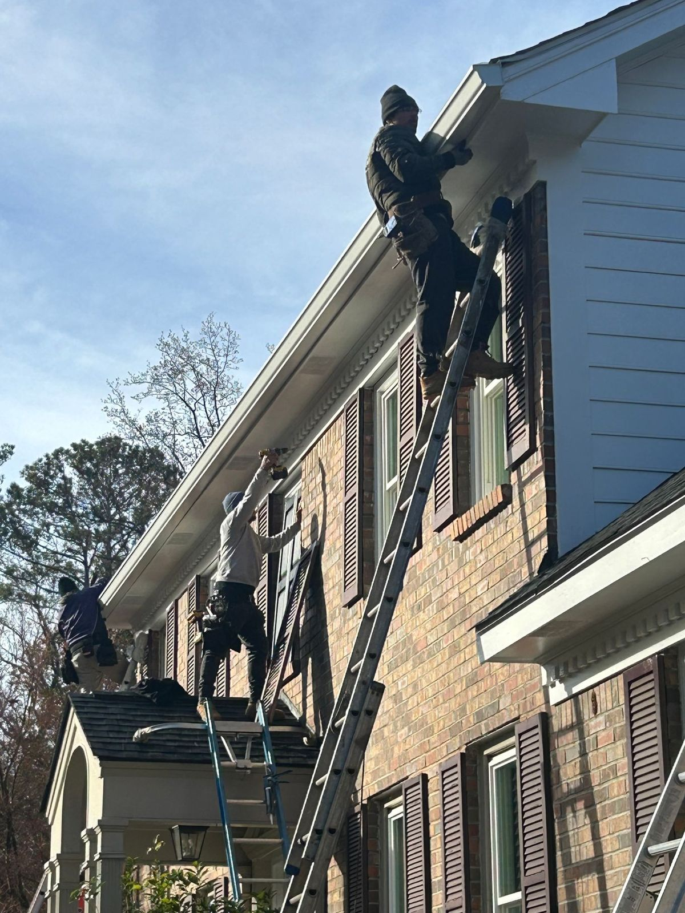
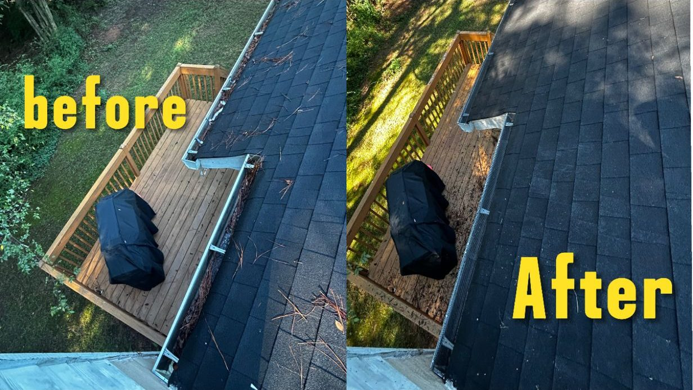
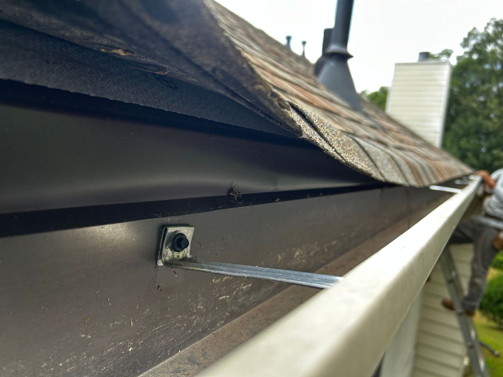
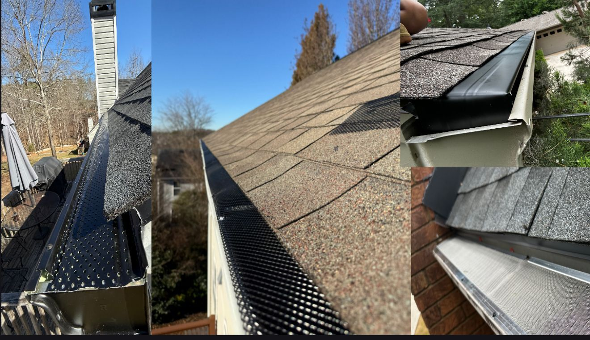
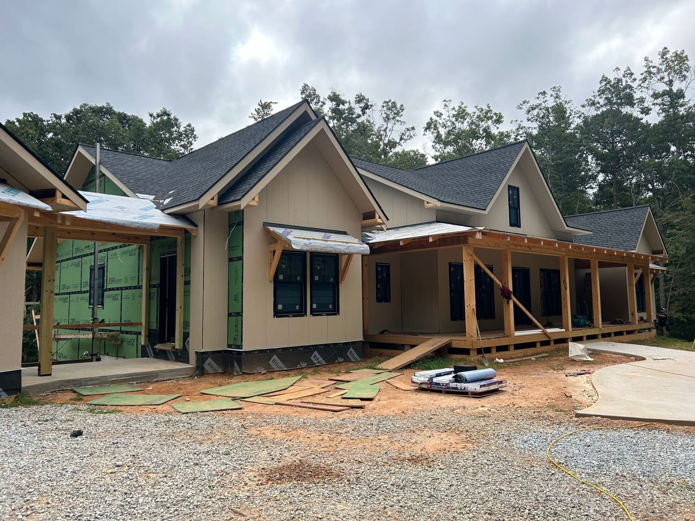

Seamless Gutters 5″ & 6″
Formed on site from one coil and cut to each roof edge.
Seamless 5″ and 6″ gutters formed on site, plus half-round gutters, guards, covers, repairs, cleaning and fascia board—from a crew with over 15 years on the ladder.
Free estimates · Quality guaranteed · Homes and businesses
Seamless gutters are rolled from a single coil of metal right at your house and cut to the exact length of each roof edge. No joints along the run means fewer places to leak.
The standard on most homes. Clean lines that read like crown molding from the street.
A rounded, traditional look that suits brick, craftsman and historic-style homes.
Formed on site from one coil and cut to each roof edge.
The classic rounded profile for traditional homes.
A solid top that sheds leaves while water still gets in.
Mesh guards that keep debris out so gutters keep flowing.
Sagging runs, loose hangers, leaking corners and downspouts.
Leaves, seeds and buildup cleared so water moves again.
Rotted boards replaced so new gutters have solid wood to hold.
Single-family homes, new construction and business buildings.
Tap everything that matches your gutters. You’ll see which service usually solves it, and you can send it straight to Palacios for a free estimate.
Photos from Palacios Gutters projects—from two-story brick homes to new construction.





Tell us what’s going on, or send it from the Fix Finder above.
We look at your roof edges, fascia and drainage and give you a clear price.
Seamless gutters are rolled at your house and cut to each run.
Off the roof, through the gutter and away from your foundation.
Fill this in and your phone opens a text to Palacios with everything written for you. Prefer to talk? Call.
(404) 384-6143